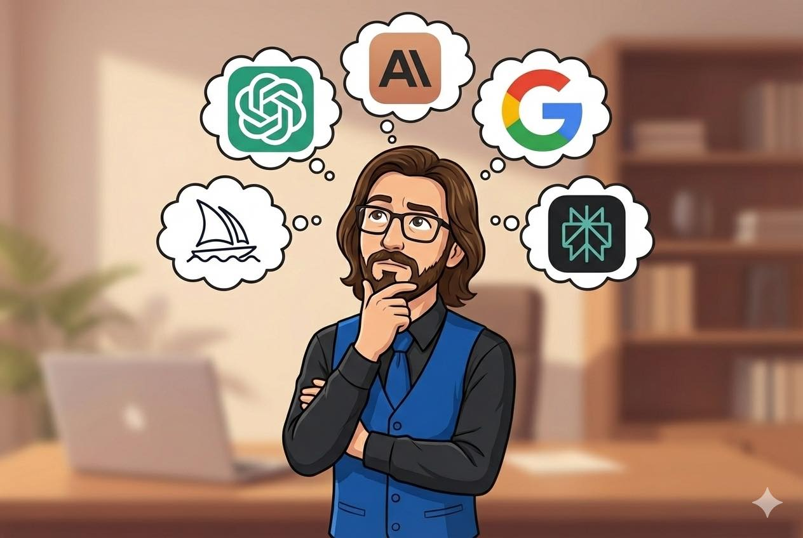

In the ever-evolving landscape of artificial intelligence, the quest to determine which AI is superior often emerges as a common theme. Yet, this pursuit may overlook the true essence of what AI brings to the table.
While many focus on the race to crown the 'best' AI, a more subtle, yet profound shift is happening. It's not about finding a singular champion but rather recognizing the distinct capabilities each AI possesses. This nuanced understanding is often overshadowed by the urge to rank and compare.
As AI technology develops, we see a diversification in its applications. Some AI models excel in research, leveraging extensive databases to provide insights and synthesize information with remarkable accuracy. Others shine in creative endeavors, crafting narratives that engage and inform, while different models are honed for problem-solving, offering logical solutions to complex challenges.
This specialization is not coincidental but designed. Each AI is crafted with a specific end in mind, optimized for tasks that align with its core design. This focus allows for a depth of proficiency that a generalist approach simply can't achieve. By acknowledging these differences, we can better integrate AI into our workflows, selecting the right tool for the task at hand.
Understanding the unique strengths of various AI tools helps us avoid the pitfalls of a one-size-fits-all mentality. By treating AI as specialists rather than generalists, we can harness their full potential, leading to more efficient and effective outcomes.
This approach also mitigates the frustration often encountered when expecting an AI to perform beyond its capabilities. Recognizing that an AI designed for research may not excel in image processing guides us in making informed decisions about which tools to employ for specific needs.
Moreover, this perspective fosters a more realistic expectation of what AI can achieve. It's not about magic or miracle solutions but about leveraging the right AI for the right purpose, thus maximizing the impact these technologies can have on our daily lives.
As we continue to advance in the realm of AI, the path forward seems clear: a more tailored and purposeful use of AI technologies. This quiet evolution will likely lead to an ecosystem where collaboration between various AI models is the norm, each contributing its unique strengths to the collective effort.
Instead of seeking the 'best' AI, the focus will shift to creating synergies between different models, resulting in more comprehensive and nuanced solutions. This is the understated yet powerful trajectory awaiting us.
Dr.WinMac explores the infrastructure and automation changes that affect everyone, explained without jargon.
Back to Blog